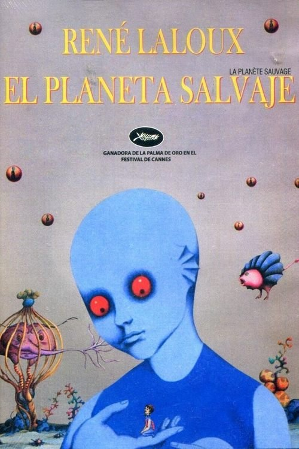

El planeta salvaje (1973)
Sinopsis Rápida
En un planeta alienígena, una raza avanzada mantiene a la humanidad como mascotas, pero ¿qué sucede cuando la inocente curiosidad se convierte en un grito silencioso de rebelión?
Sinopsis Detallada
En el extraño y fascinante planeta Ygam, los avanzados Draags, seres azules de una espiritualidad y tecnología inigualables, han reducido a los humanos –los Oms– a la condición de animales domésticos. Esta impactante y surrealista película explora la crueldad de la superioridad tecnológica y la pérdida de la identidad humana a través de una estética visual única e inolvidable. La perspectiva desde la mirada de los Oms, sometidos a un mundo donde su propia existencia carece de significado para sus opresores, es desgarradora, pero también cautivadora por su originalidad. La animación, aunque de su tiempo, presenta un estilo distintivo y perturbador que permanece en la memoria mucho después de ver la película.
¿Por qué tenés que verla?
- Una exploración visualmente impactante y filosóficamente profunda de la opresión y la condición humana.
- El estilo de animación único y vanguardista de René Laloux, que se adelanta a su tiempo.
- Su influencia perdurable en la ciencia ficción y la animación, como un ejemplo de obra maestra con un mensaje aún vigente.
- Un estudio perturbador de las relaciones de poder y la deshumanización.
Idea Extra
Análisis del simbolismo y la alegoría política en 'El planeta salvaje', comparándolo con otras obras de ciencia ficción que exploran temas similares.